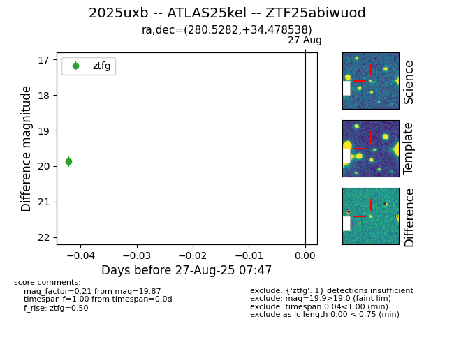

Target 2025uxb at 2025-08-27 07:47, see:
FINK: fink-portal.org/ZTF25abiwuod
Lasair: lasair-ztf.lsst.ac.uk/objects/ZTF25abiwuod
ALeRCE: alerce.online/object/ZTF25abiwuod
TNS: wis-tns.org/object/2025uxb
YSE: ziggy.ucolick.org/yse/transient_detail/2025uxb
alt names
ZTF25abiwuod (ztf,fink)
2025uxb (tns,yse)
ATLAS25kel (atlas)
coordinates:
equatorial (ra, dec) = (280.5282,+34.47854)
galactic (l, b) = (63.6051,+16.73675)
photometry
last ztfg=19.87
1 ztfg detections
